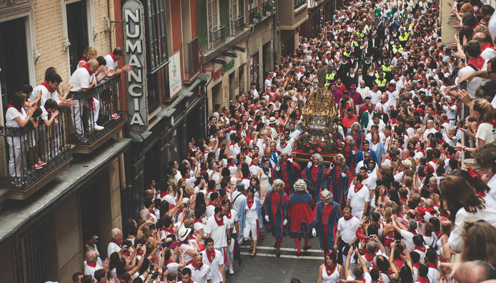

Qué es la Procesión de San Fermín
La Procesión es uno de los actos más importantes y representativos de San Fermín. Durante su recorrido, la ciudad cambia completamente de ritmo: la música, las autoridades, las peñas y la figura del santo avanzan por las calles en un ambiente solemne y profundamente arraigado.
Cuándo y dónde se celebra
Tiene lugar el 7 de julio por la mañana, recorriendo el casco antiguo de Pamplona. Es uno de los momentos más significativos desde el punto de vista cultural y tradicional.
Por qué verla bien no es fácil
El recorrido es largo y la visibilidad desde la calle depende mucho del punto y de la afluencia. En muchos tramos, la experiencia se reduce a ver pasar fragmentos sin continuidad.
Opciones para ver la Procesión
Existen diferentes formas de vivir la procesion, cada una con sus particularidades:
- Desde la calle: cercanía, pero visibilidad limitada y fragmentada.
- En puntos concretos: mejor perspectiva, aunque con mucha afluencia.
- Desde un balcón: continuidad, contexto y una visión completa del recorrido.
Cada forma permite estar presente, pero no todas permiten entender lo que ocurre.
Tipos de experiencias
Cada experiencia parte de una misma base: acompañar la Procesión con perspectiva y continuidad. A partir de ahí, cambia el cómo.


¿Cuánto cuesta ver la Procesión desde un balcón?
Las opciones varían en función del recorrido, la ubicación y el tipo de acceso. De forma orientativa, las experiencias suelen situarse entre 80€ y 200€ por persona.
A partir de ahí, cada propuesta se adapta en función del tipo de grupo y del nivel de experiencia buscado.
Una forma diferente de vivir la Procesión
Desde un balcón, la Procesión deja de ser un instante puntual para convertirse en un recorrido que se entiende. Se percibe el ritmo, el significado y la conexión entre todos los elementos.
Esta propuesta no busca cambiar la fiesta, sino ofrecer una forma de acceder a ella con más sentido, comodidad y contexto.
Por qué hacemos esto
San Fermín no es solo intensidad. También es tradición, historia y significado.
Esta forma de vivir la Procesión nace de querer compartir esa parte menos visible de la fiesta, desde una manera de entender San Fermín que explicamos en quiénes somos.
Cuéntanos cómo te gustaría vivirla y te proponemos opciones a medida, sin compromiso.

No tiene nada que ver con estar abajo. Mucho mejor.
Seguir descubriendo San Fermín
La Procesión es uno de los momentos más representativos de la tradición, pero la fiesta tiene muchos ritmos.
Puedes empezar por el Chupinazo, seguir con el encierro o descubrir momentos más cercanos como los Gigantes.
Porque San Fermín también se entiende en los detalles.
Un recuerdo que va más allá del momento
Algunas experiencias no terminan cuando acaba el evento. Para grupos, empresas o momentos especiales, podemos acompañarlo con piezas diseñadas específicamente para la ocasión.
Desde elementos sencillos hasta detalles más cuidados, todo se plantea como una extensión natural de la experiencia.
Porque a veces lo que se lleva puesto también forma parte de lo vivido.